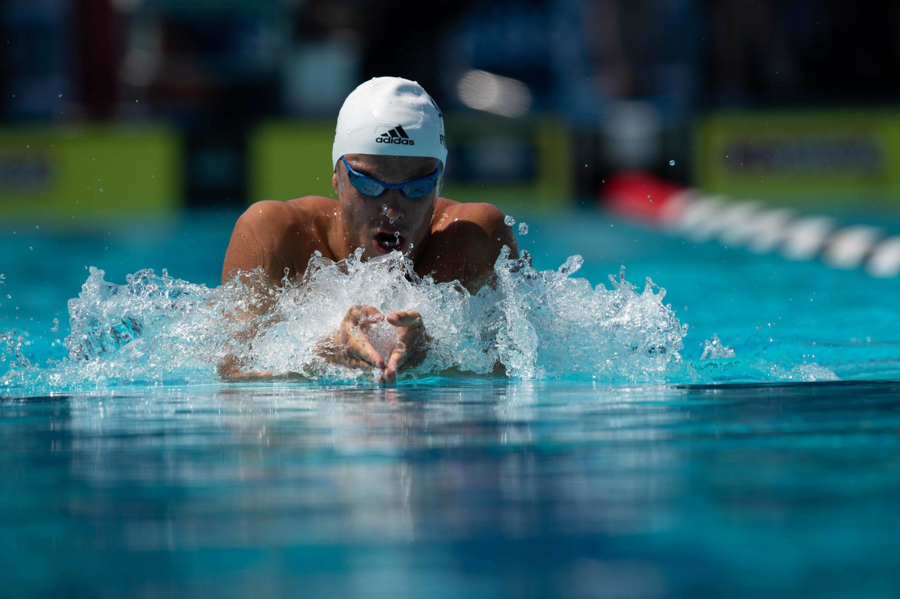

La rana è uno stile di nuoto in cui il nuotatore si trova in posizione prona, con il corpo orizzontale sulla superficie dell'acqua. In questo stile, le braccia si muovono simultaneamente sulla superficie dell'acqua, portando il corpo in una posizione quasi verticale per poi tornare sulla superficie dell'acqua. Le gambe eseguono un movimento che richiama appunto il movimento delle gambe di una rana, spingendo l'acqua all'indietro per generare propulsione. La rana è uno stile che richiede una buona coordinazione tra braccia e gambe, nonché una notevole forza muscolare nella parte inferiore del corpo.

La rana è uno stile di nuoto spesso utilizzato nelle competizioni e richiede una tecnica precisa per massimizzare l'efficienza del movimento nell'acqua. I nuotatori che praticano la rana devono sviluppare una buona flessibilità, forza muscolare e resistenza cardiovascolare per eseguire correttamente questo stile. Inoltre, la rana coinvolge molti gruppi muscolari, inclusi i muscoli delle spalle, delle braccia, del core e delle gambe, rendendolo un allenamento completo per tutto il corpo.
Le gare che comprendono questo stile sono: